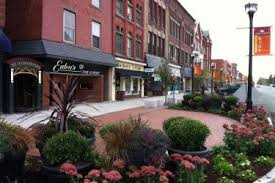

Welcome to my College

Your path to excellence and innovation starts here! My college is not just an institution; it's a place of growth, learning, and vibrant community. It serves as a foundation for academic excellence, offering a diverse range of courses and opportunities to help students achieve their aspirations. Beyond academics, your college might be home to energetic clubs, sports teams, and cultural events that inspire creativity and collaboration. It's a place where lifelong friendships are formed, ideas are exchanged, and personal potential is nurtured. Whether it's through inspiring faculty, cutting-edge facilities, or a welcoming campus environment, your college plays a vital role in shaping futures and fostering success. If you share a few details about your college, I can make it even more tailored!
Our History
Founded in [2022], My College has grown from a small campus into a leading institution renowned for excellence in education and research.Shivajirao Kadam Institute of Technology and Management (SKITM) was founded in 2009 and is part of the Transnational Knowledge Society, which was established in 2008. SKITM is affiliated with Devi Ahilya Vishwavidyalaya (DAVV), Rajiv Gandhi Proudyogiki Vishwavidyalaya (RGPV), and the Pharmacy Council of India. It offers various programs in Engineering, Management, Pharmacy, Commerce, and Management.
Here's a more detailed look at SKITM's history:
Our Facilities

Our college boasts state-of-the-art classrooms, modern laboratories, digital libraries, and vibrant student life facilities.Facilities play a crucial role in enhancing the overall experience at any institution. From state-of-the-art classrooms equipped with the latest technology to advanced laboratories that foster practical learning, these amenities ensure students gain hands-on knowledge and skills. Libraries stocked with diverse collections of books, research papers, and digital resources cater to the academic needs of learners. Sports facilities, recreational centers, and well-maintained campus grounds provide opportunities for physical activity, relaxation, and social interaction. Additionally, cafeterias offering hygienic and delicious meals, medical centers, and robust transportation services make everyday life convenient and comfortable for everyone on campus. If you share more details, I can add specifics to create a more tailored description of your college’s facilities.